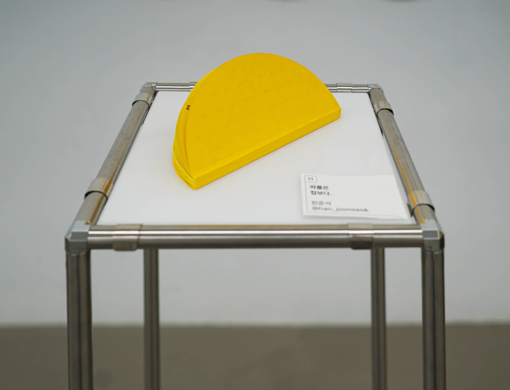
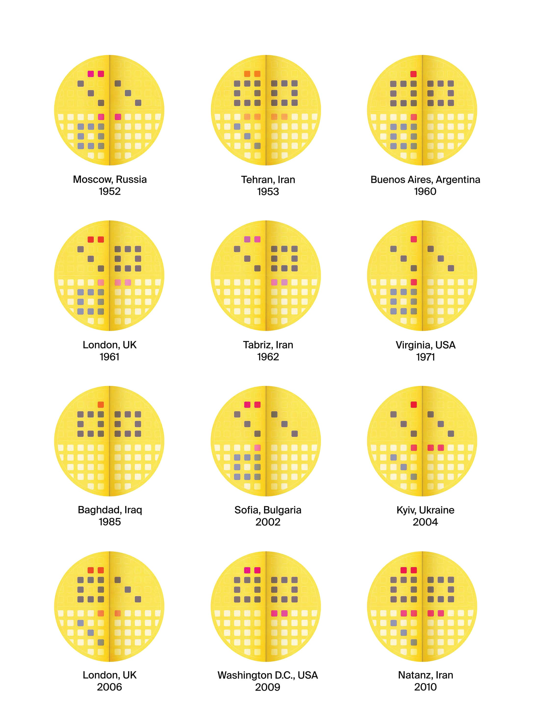
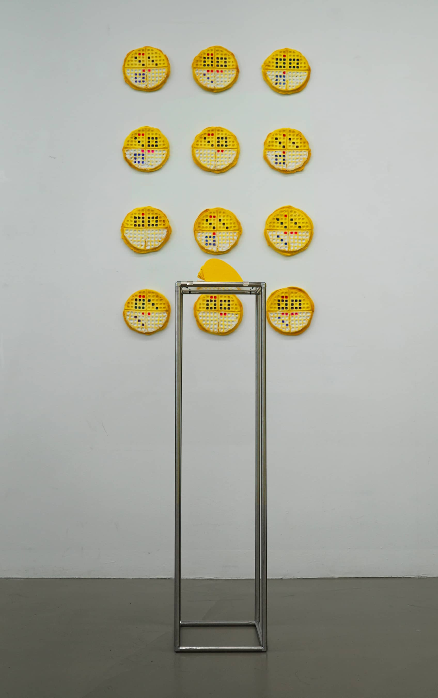
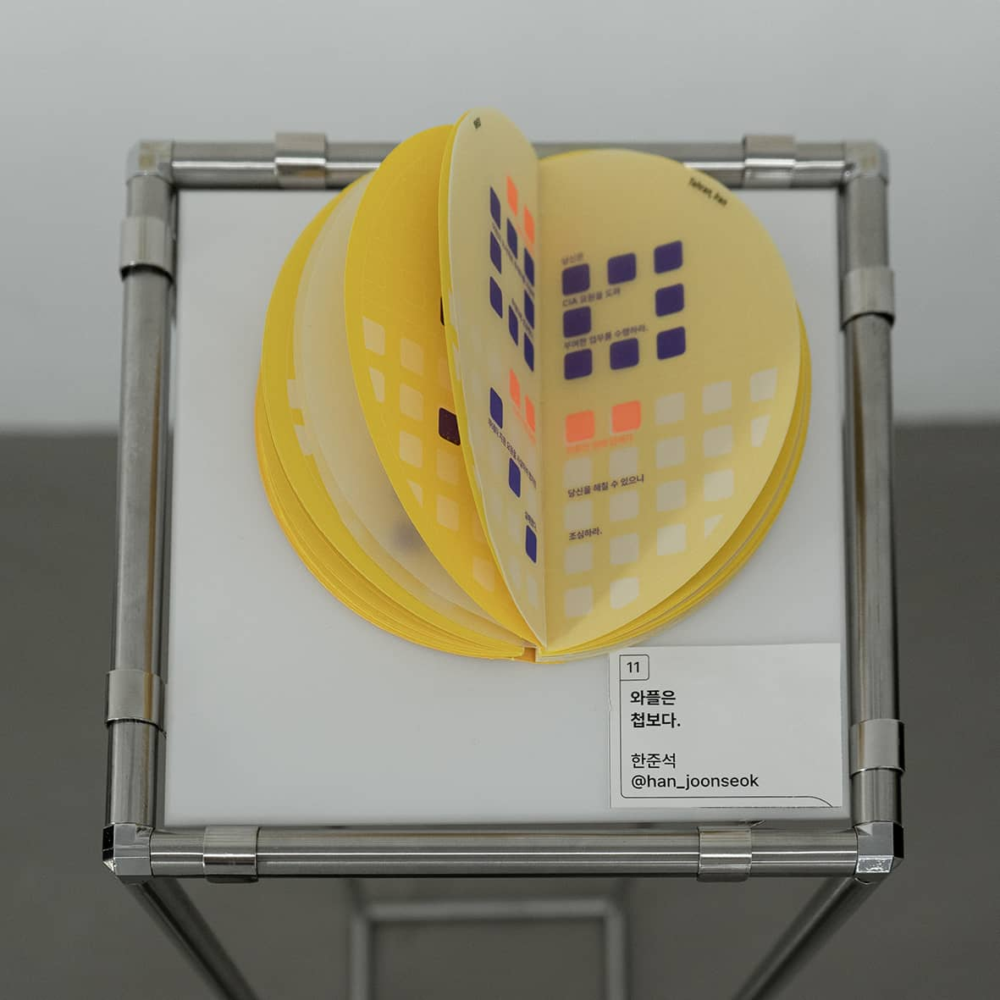

와플은 첩보다.

일상의 사물을 낯설게 바라보고, 전혀 다른 기능으로 전환하여 엉뚱한 시각적 결과물을 얻어냈습니다.
이상하리만치 저렴한 가격, 의문의 사각형 그리드, 여러 가지 재료의 혼합으로 기호성을 띤 와플은 첩보입니다.




일상의 사물을 낯설게 바라보고, 전혀 다른 기능으로 전환하여 엉뚱한 시각적 결과물을 얻어냈습니다.
이상하리만치 저렴한 가격, 의문의 사각형 그리드, 여러 가지 재료의 혼합으로 기호성을 띤 와플은 첩보입니다.


